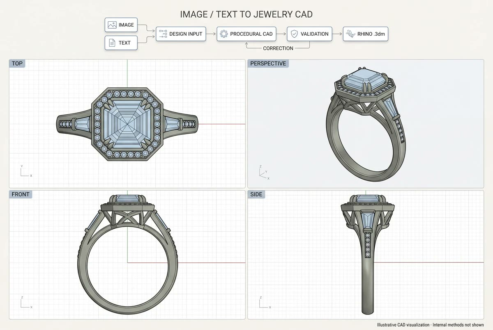
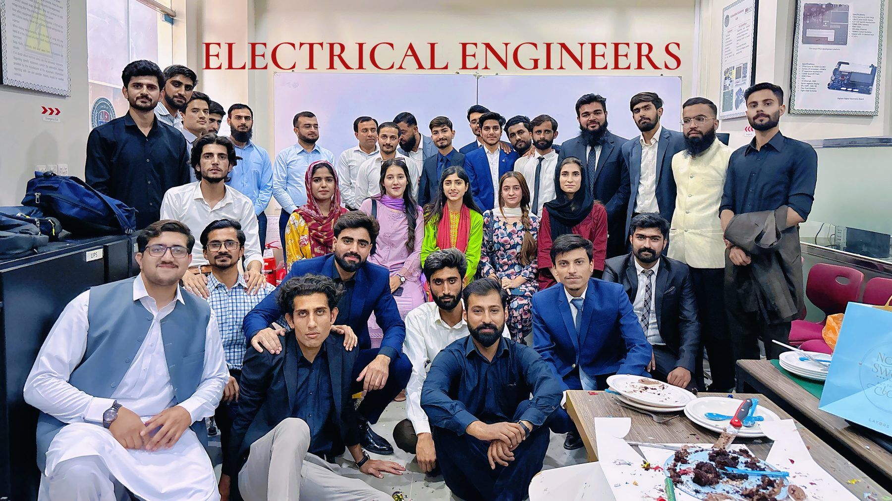

I build AI that
makes things.
I'm an electrical engineering graduate and an AI engineer and researcher at Rare Sense Inc. I work on systems that turn text and images into editable 3D and CAD, automation pipelines for real businesses, and robots designed and tested in simulation. I train models, automate workflows and build pipelines end to end.
Nova3D
Co-author of Nova3D: Code-Native Generation of Programmable 3D Assets with Nimra Noor, Muhammad Bilal and Hassan Baig (arXiv 2607.22738, July 2026). Nova3D writes executable Blender code instead of a frozen mesh, so every text-to-3D or image-to-3D asset arrives with named parts, a real hierarchy, joints and edit handles.
Compared against eleven baselines from mesh, part-structured, code-native and CAD families. Code: github.com/RareSense/Nova3D · nova3d.xyz
From a photo to editable CAD
Together with Nimra Noor, I built one of the first pipelines that turns a reference image or a text description of a ring into editable, native Rhino CAD. The design is read, built procedurally, then validated and corrected automatically, so every stone, prong and band is its own object.
It powers FormaNova CAD Studio, Rare Sense's AI jewelry platform. The story is in my article From procedural rings to native Rhino CAD.

Pipelines for real brands
AI systems that do a whole job, not a single step: data, training, inference, validation and delivery, running automatically.
Garment automation for J., Sitara and Kollective Moda
Automation pipelines for fashion brands' garment imagery and production workflows.
Image and text to jewelry CAD
Procedural CAD with automatic validation and correction, exporting native Rhino files.
Text-to-3D and image-to-3D
Structured, editable 3D with parts and joints, ready for games, XR and simulation.
Training and inference
Vision transformer classification, inference tooling and dataset pipelines.
Pipeline recording studio
A Three.js app that animates the Nova3D image-to-3D pipeline stage by stage for demos and papers.
Posting automation
Automated content scheduling and posting across platforms.
Robots in worlds Nova3D builds
Humanoids and quadrupeds tested in photoreal environments generated with Nova3D: orchards, vineyards, rubble fields and stream beds, with real physics and trained walking policies.

Electrical engineering
My foundation is electrical engineering: circuits, signals and systems. It's why my AI work stays close to real hardware, from robot actuators to production pipelines.